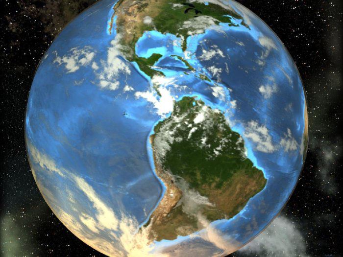

Знайомство із Сонячною системою

Сонце

Земля
На головну
Земля
Земля - колиска людства, проте неможливо постійно жити в колисці.
К.Е. Ціолковський

Наша унікальна планета розміщена на відстані 149,5 млн км від Сонця. Понад 70 % земної поверхні вкрито водою, яка завдяки температурному режиму нашої планети може перебувати в трьох агрегатних станах - твердому, рідкому та газоподібному. Водяна пара затримується в атмосфері Землі, що робить її особливо яскравою серед планет Сонячної системи.
Навколо нашої планети є атмосфера, що складається переважно з кисню, азоту та вуглекислого газу. Атмосфера захищає життя на Землі від шкідливої сонячної радіації. У ній згоряє більшість метеоритів до того, як вони досягають поверхні Землі.
 Досить складно зазирнути всередину нашої планети, адже навіть найглибші шахти мають глибину 10 км. Проте вчені знайшли інший спосіб. Записуючи коливання земної поверхні, що відбуваються під час землетрусів, вони встановили, що надра нашої планети складаються переважно з трьох основних частин - кори, оболонки (мантії) та ядра. Вік найстаріших порід земної кори перевищує 4,5 млрд років. Температура, тиск та густина речовини збільшуються з глибиною. Температура ядра досягає 10 000 °C.
Досить складно зазирнути всередину нашої планети, адже навіть найглибші шахти мають глибину 10 км. Проте вчені знайшли інший спосіб. Записуючи коливання земної поверхні, що відбуваються під час землетрусів, вони встановили, що надра нашої планети складаються переважно з трьох основних частин - кори, оболонки (мантії) та ядра. Вік найстаріших порід земної кори перевищує 4,5 млрд років. Температура, тиск та густина речовини збільшуються з глибиною. Температура ядра досягає 10 000 °C.
Земля обертається навколо Сонця по еліптичній орбіті. Найближче наша планета підходить до Сонця в січні, а на найбільшу відстань відходить у липні. Один повний оберт Земля здійснює за 365,25 доби.
Земля - єдина планета Сонячної системи, на якій існує життя.
Характеристики Землі

- Мінімальна відстань від Сонця - 149,6 млн км
- Максимальна відстань від Сонця - 152,1 млн км
- Діаметр - 12 756 км
- Середня швидкість руху по орбіті - 29,79 км/с
- Супутники - Місяць
- Нахил осі Землі до площини орбіти - 23°27'